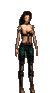
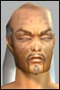

Last Thread Next Thread Last Thread Next Thread  |
| Author | Thread |
| Truwind Eleet | Lowburn Interviews Aberic! I recently had the opportunity to interview Aberic of The Dark Carnival Omni-Tek guild. Aberic was responsible for the killing of the Henry Radiman decoy whom was sent to Omni-HQ in an attempt, according to Omni-Pol, to bring out his assassin. Omni-Pol accomplished what it had set out to do - and drew out the attacker. Shortly after his release from an Omni-Tek prison cell, I was able to meet with Aberic in a secret location - safe from any would be assassins possibly seeking revenge for the death of the clone. Here is what he had to say: Lowburn: Thank you for speaking with me Aberic. Most people might not be aware, but you were the man who brought down the Henry Radiman 'fake' yesterday. So I think I'll start out with this question: Just what were you thinking? Aberic: My thoughts are that there shall never be peace between Omni and the Clans. It will never happen. And I will make a stand for what I believe to be the true Omni and shall stand this way forever. The clans are responsible for the borgs and all there problems and I believe also Ross knows more then his is telling even his highest advisors. So I shall kill all Clan I come across - they have been giving a chance to change and it has been long enough time to take care of the rest. Lowburn: Henry Radiman is a well-known speaker for the Council of Truth. Do you believe you were justified in your actions of attacking - essentially a politician - as you did? Aberic: I don't care if its a Clan waste collector I'm going to kill it - politician doctor crat soldier - I don't care. They shall all fall at my hands. Omni trained me to kill and that's what I do best. Lowburn: We all know you delivered the blow that killed this Radiman clone - tell us about the battle. Was it just you vs him, or were there more people involved - and what essentially 'happened' during this assassination? Aberic: During my first assault he had a 175 soldier with him. I took out the soldier first and then Radiman. Second assault was at the grid location and he was alone this time. I then assassinated him again. Both times where swift and deadly. If I find the true Radiman I will also assassinate him. I am warning all that this amnesty shall never work. Lowburn: I see, so you alone pulled this off. Some would call this a great vindication, while others may consider it a tremendous insult to the amnesty, both to Omni-Tek and the Clans. Obviously your opinion toward the amnesty is clear though. Did Omni-Pol inflict any sort of punishment as a result of your action? Aberic: Yes I was imprisoned for a while while some investigating happened and I was found innocent at the time even though I said I was the one responsible for his death. I was found innocent at the TIME. We shall see what the future brings. Lowburn: Indeed. How did you personally feel when you yourself went up against Henry Radiman. Surely it has to be a monumental moment in your life - most people would be lucky to even see Henry Radiman in their lifetime, much less do what you did. Aberic: Yes I feel good about it but I expect many deaths such as these by my hands. It is what I was trained to do. I only wish it had been the true Radiman. We at Omni still are working on permanent death and we are not far off from the corrupting of his files, which will result in his permanent death. So I still stand tall and proud of my actions and would do it again if I have too This peace shall never work. Lowburn: Well - one final question. Do you feel like Omni-Tek made a mistake by alerting Radiman to the assassination attempt, or do you feel that they could have somehow greater benefited from his death? Aberic: We will benefit from all Clan deaths pure and simple, like the rain that falls from the sky. Lowburn: Those who share your own views and those who do not are almost evenly numbered at this time. Only time will tell where we are headed. Aberic - thank you for your time. Aberic: Your welcome and DEATH TO ALL CLAN TODAY. |
 November 28th, 2001 18:41 November 28th, 2001 18:41 | #1 |
| CaptFallout Soleet | Wow, that's great to hear. Guildmates interviewing guildmates. Whoop-de-do. Found innocent? So many people saw him... and attacking a decoy is the same thing. You were trying to kill Radiman and damage Omni-Tek. You and your guild should be expelled from Omni-Tek. |
| November 29th, 2001 00:43 | #2 |
| Kirrana Soleet  | I am confused He admits to trying to kill Radiman and bumps of a fake radiman and omni pol let him go and claim hes innocent. I think he should be locked up for his own good along with the clowns that let him go. ooc This was I thought going to be interesting to see a player and a guild pay for his actions but I get the feeling in the story some else is going to get blamed. The in game actions have to make some sense, if someone was going against Omni-Tek the way Omni-Tek are pictured in the book actions would be taken against them. But all we get is a water down view, of actions making no sense which all in all is rather dull. |
| November 29th, 2001 01:03 | #3 |
| Chagidiel Soleet  | ooc Completly agrees with Kirr... Nowadays you get sacked for much MUCH lesser offence to company policy It has become somewhat disturbing that Omnitek now seem more divided then the clans, and nothing hapends =P |
| November 29th, 2001 02:03 | #4 |
| Khamuk Leetas | This could be a possibly biased interveiw.Lets see no it proberbly is a biased interview if only we all could have ourselves be the opposing prosecutor in court. lets screw reducation for DC and do what Ross should have done years ago drop them a pink slip in the mail |
| November 29th, 2001 02:22 | #5 |
| Scorus Supa Leet | If Omni-Tek is serious about peace, then they must devote their vast resources to slapping this man into an Omni-Tek prison and arranging a trial as soon as possible. He deserves a fair trial, but his own words will hang him. And if Omni wants us to believe that they can't find him or if he escapes their incredible power, they will show their lack of devotion to peace. This is in Phillip Ross' hands right now and there is no reason why he can't act on it today. Scorus Clan Diplomat |
| November 29th, 2001 03:08 | #6 |
| MrTeatime Soleet | So, if Aberic was found innocent by Omni-Pol, it would mean that the factions who accuse him of being a traitor is actually going against OT themselves? If Chairman Ross said TDC should not be punished, I wonder how many so called pro-OT factions would actually listen? |
| November 29th, 2001 07:34 | #7 |
| mege Leetas | OT wants to end the conflict, not peace - there's a difference. The peace settlement will not be as simple as "no more fighting" - rather it will include things that will bring the rebels under OMNI employment once again. I have a question for each and every clanner out there: why are you a clan member? If you're not opposed the OMNI-Tek then I suggest that you fill out your OT application today. Else, if you are opposed to OMNI-Tek - then why are going for peace? At the same time - a question for OMNI's in favor of a peace settlement: Why do you want to support people that live to oppose OMNI-Tek's interests on Rubi-Ka? The rebels are against OMNI's production of Notum on this planet... that's why OT is here (in case you forgot). |
| November 29th, 2001 07:40 | #8 |
| Chagidiel Soleet | MrTeatime: If chairman Ross were to say that those assinated Radiman were not to be punished, I would ofcourse listen and accept, since I am his employee. If chaiman Ross were to say, that it is ok to gather unlawfull massdemonstrations, were people acctually shants "Kill Ross" and "I will kill Ross, even if it makes me a clanner", then so be it. I would listen, and accept. I would do this,since he is more well informed about the big picture than me, since he is chairman, and I am an employee. It is however quite unlikely, as far as I know, that OmniTek would think it is a good thing to be called incompetent by its own employees. It is unlikely, when one think of previous actions taken by Omnitek during simular circumstances, that this particular situation would not be acted upon, and those working against the will of OmniTek would be roaming the streets and cause as much damage to our great provider as they wants. But indeed, if this should acctualy be in the will of Omnitek and chairman Ross, I would certainly accept it. That is what makes me an employee, and Ross a chairman. Now, Mr mege You are right, end the conflict, that is what OmniTek wants. And so far it seems that the best way to end it is, through peace. There is a couple of resons for this, and frankly, I doubt i have to spell it out for you, but nevertheless: A peacefull solution is of course a much better solution regarding media. OmniTek do not wants the image of a dictator, but rather the image of being for peace, and freedom of speech, since that is all that OmniTek stands for. There would be a remarkeble loss of prestige, public relation, and above all, economical benefiction, if this conflict would have to be ended by pure force. An outright war would bring an enourmous loss of money for OmniTek. The prices of Insurance would soon be expected to rise, due to the massive use of the terminals, thus creating an need for insurance Omnitek never would have the possibility to fill. New actors would enter the market (poorer one, no doubt). Not to speak about the supply of Notum, that most certainly were to be damaged due to war... The list could of course go on for ever... and OmniTeks shares would soon drop... And if this rather small upprising of the claners acctually were to create economical damage to OmniTek by explaining war to our great provider, would we not be in the risk of getting more violence. If every little group of people feeling forgotten, everyone that had a bad day, and blamed it on OmniTek since they can not face theire own failures, and all those claiming to be underpaid, if all those acctualy were to pick up weapons since they feel this is the way to solve conflicts, then there would be a very unhealthy climate to make buisnes in. |
| November 29th, 2001 10:20 | #9 |
| Chagidiel Soleet | ...and then I have not even mentioned all the induvidual sacrifices that were to be made if this were to be an outright war. I for one, know that I would not be feeling good if I, once more were ordered to kill another huamn..opifex, or atrox. Nevertheless, if that is what OmniTek would inlcude in my workdirectives, so be it. But as long as that has not happend, I personally hopes for a peacefull solution, as do OmniTek it seems. Thank you for listening |
| November 29th, 2001 10:24 | #10 |
| Khamuk Leetas | As this interview was done by a DC member i question the Validity of Aberics so called "Statements" Derva has already Accused him of the crime and 100s of eyewitnesses can place him. I think if Chairman Ross actualy Said this instead of some DC propagated Lie the pro OT factions would listen and comply |
| November 29th, 2001 21:06 | #11 |
| The saved copy (Funcom's forum archive, saved by the Wayback Machine in 2025) |
All times are GMT.